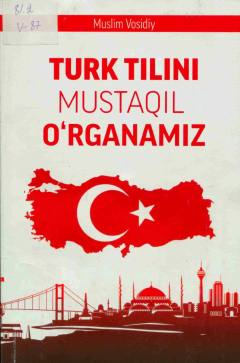

TTTurk tilini mustaqil o'rganish uchun mo'ljallangan amaliy qo'llanma.
Mazkur qo'llanma turk tilini mustaqil o'rganishga mo'ljallangan bo'lib, tilning o'ziga xos fonetik va leksik xususiyatlarini o'z ichiga oladi. Kitobda alifbo, unli va undosh harflar talaffuzi hamda kundalik muloqot uchun zarur bo'lgan boshlang'ich so'zlar berilgan. Qo'llanma qardosh tillarni o'rganishga qiziquvchi keng kitobxonlar ommasiga mo'ljallangan.